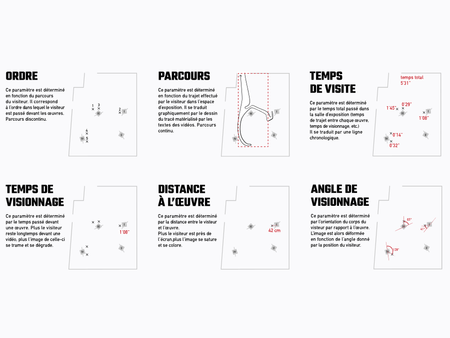
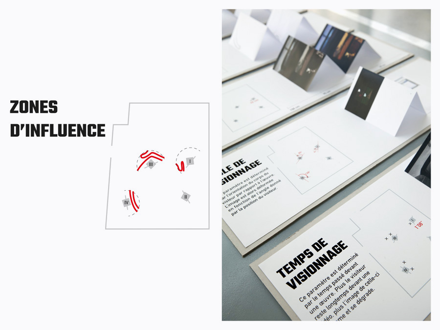
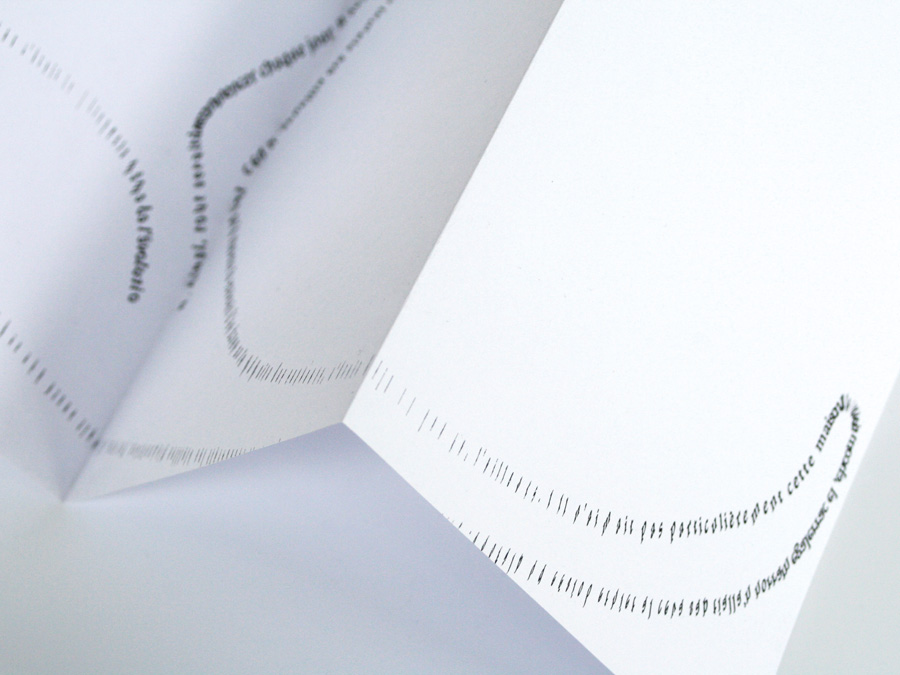

-métrie
des éditions paramétriques | 2017
Ce projet expérimental cherche à retranscrire dans une édition graphique et unique le parcours de chaque visiteur dans un lieu d’exposition.
Nous avons pour cela défini des paramètres à observer sur chaque parcours : temps passé devant une oeuvre, orientation du regard ou encore sens de la visite. Nous avons suivi les déambulations des visiteurs dans le lieu d’exposition et récolté des mesures correspondant aux paramètres fixés.
À ces paramètres nous avons ensuite associé des comportements graphiques spécifiques : plus le temps passé par visiteur devant une œuvre est important, plus l’image de celle-ci se dégrade dans le catalogue, par exemple.
Nous avons ainsi produit des éditions paramétriques uniques, retraçant de manière graphique et abstraite l’itinéraire des corps dans l’espace.


